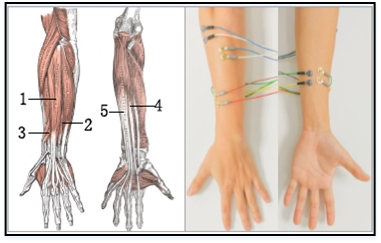
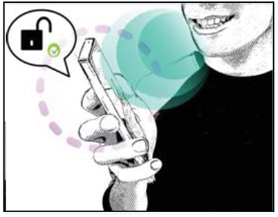
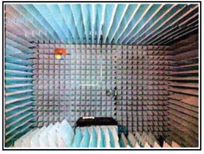
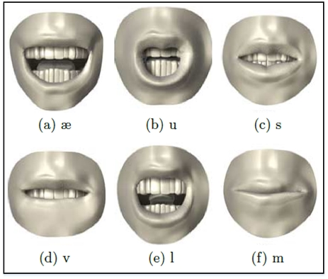
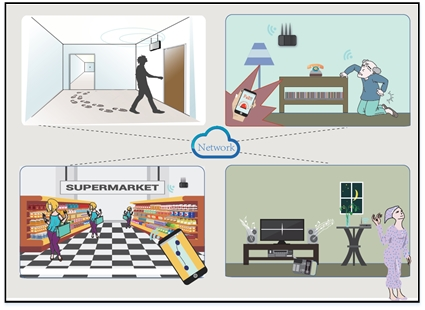
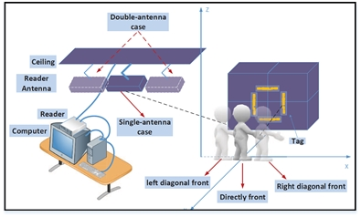
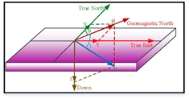

|
Yongpan Zou (邹永攀)Assistant Professor |
Biography
I am currently an Assistant Professor in the College of Computer Science and Software Engineering of Shenzhen University, since September 2017. I obtained my Ph.D in February 2017 in the CSE Department of HKUST, under the supervision of Professor Lionel M. Ni. Prior to this, I received my B.E in School of Chemical Engineering and Technology, Xi'an Jiaotong University in July 2013.
Research Interests
My research interest covers Wearable and Mobile Computing, Human-computer Interaction and Ubiquitous computing. My vision is to develop new technologies, algorithms, and systems that enable smart sensing, provide intelligent services, and deliver novel applications. I draw on novel sensing & computing technologies with embedded system design, machine learning models, signal processing algorithms, and mathematical methods to solve real-world problems. I am now leading Intelligent Perception and Mobile Computing Group.
Academic News
2018/09, our paper “ArmIn: Explore the Feasibility of Designing a Text-entry Application Using EMG Signals” is accepted by Mobiquitous 2018. The first author is a master student under my supervision.
2018/08, our paper “BiLock: User Authentication via Dental Occlusion Biometrics” is accepted by Ubicomp 2018.
2018/04, our Deomo paper “A Novel Finger-Assisted Touch-free Text Input System Without Training” is accpeted by Mobisys 2018. The first author is a master student under my supervision.
2018/02, I am invited to be TPC member of Globecom 2018
Selected Publications [Full List]
* indicates Corresponding Author
Conference Papers
|  | ArmIn: Explore the Feasibility of Designing a Text-entry Application Using EMG Signals
|
|  | BiLock: User Authentication via Dental Occlusion Biometrics
|
|  | TagFree: Passive Object Differentiation via Physical Layer Radiometric Signatures
|
|  | We Can Hear You with WiFi! |
Journal Papers
|  | Wi-Fi Radar: Recognizing Human Behavior with Commodity Wi-Fi
|
|  | GRfid: A Device-free Gesture Recognition System Using COTS RFID Device
|
|  | SmartScanner: Know More in Walls with Your Smartphone!
|
Workshop/Poster/Demo
 |
Demo: A Novel Finger-Assisted Touch-free Text Input System Without Training
|
Professional Activities
TPC Member for
IEEE Globecom 2017, IEEE ICPADS 2017, VTC 2018-Spring, IEEE Globecom 2018
Reviewer for
ICPADS 2016, Ubicomp 2016, Globecom 2017, TMC, COMMAG, ToN
Chairing service
Publication chair for ICPADS 2017 and ICPADS 2018
Group Members
PG Students
Qiang Yang, Meng Zhao, since 2016
Yetong Han, Jiawei Lin, since 2017
Dan Wang, Baojie Yuan, sicne 2018
UG Students
Hongrui Fu, Qianru Liao, Yuming Yang, Shicong Hong, Ziyin Wang, Yuhang Li, since 2017
Alumni
Weifeng Liu (now in CMB), Shufeng Ye (now in LONGTU GAME), Changsheng Zhou (now in CITIC Bank), Junjun Bao (now in CMB), Xuejin Zhou (now in JIGUANG), since 2015
Jingchuan Xu (now in Tencent), Zehui Zheng (now in University of Victoria with full scholarship), Jinyong Wu (now in Baidu), since 2015
Selected Teaching Achievements
{kind=link}
{kind=link}
{kind=link}
{kind=link}
{kind=link}
{kind=link}
{kind=link}
{kind=link}